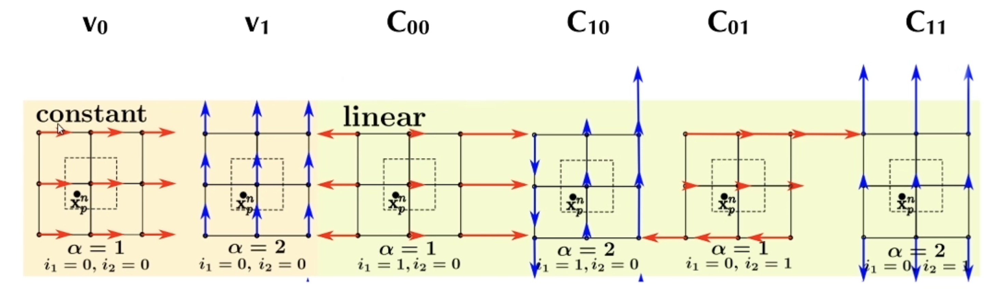
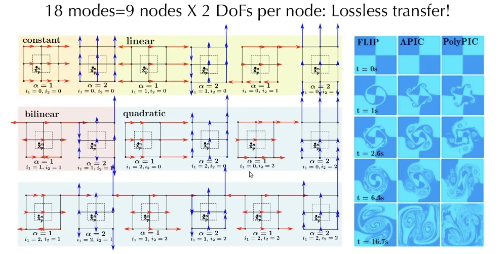
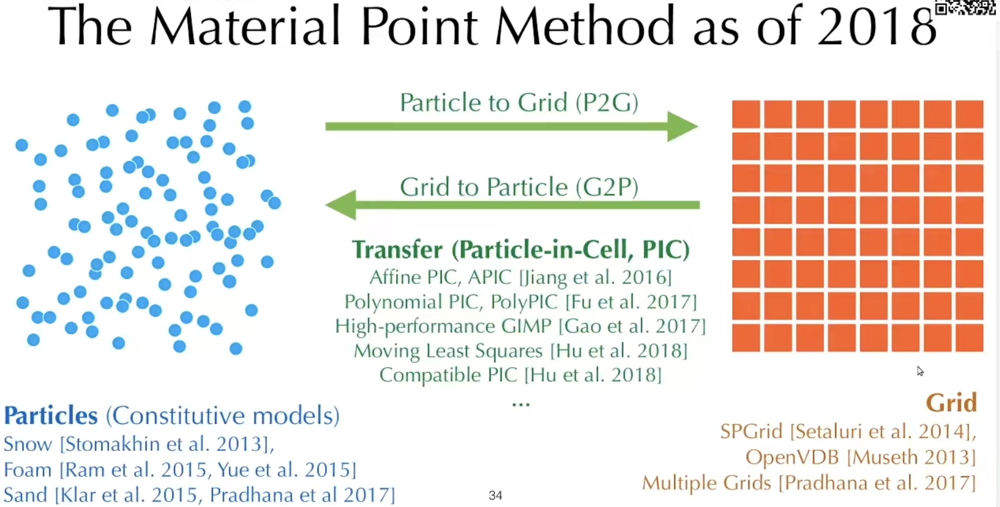

物质点法MPM
目标
-
了解MPM相关知识点
-
解读Taiji中mpm88.py代码
1. 混合拉格朗日-欧拉方法
1.1 方法概览
Particle advection schemes:
- Particle-in-Cell (PIC), Affine Particle-in-Cell (APIC), Polynomial PIC (PolyPIC)
- Fluid Implicit Particles (FLIP)
Material Point Method (MPM), Moving Least Squares MPM (MLS-MPM)
- Constutive models in MPM
- Lagrangian forces in MPM
- Implicit MPM
1.2 方法一般流程
在混合拉格朗日-欧拉方法中，粒子是一等公民，网格是用来做计算和存储状态的。
- Particle-to-Grid transfer (P2G)
- Grid operations
- Pressure projection
- Boundary conditions
- Grid-to-Particle transfer (G2P)
- Particle operations
- Move particles
- Update material
1.3 欧拉网格vs拉格朗日粒子
| 欧拉网格 Eulerian Grids | 拉格朗日粒子 Lagrangian Particles | |
|---|---|---|
| <+> | Good at projection | Good at advection |
| <+> | Easy to discrete | Low dissipation |
| <+> | 查找邻居很高效 Efficient neighbour look-up | |
| <+> | Easy to precondition | |
| <-> | Dissipative: loss of energy and geometry | 做离散化很麻烦 Tricky to discrete |
| <-> | 查找邻近粒子算法复杂 Complex algorithm for neighbour look-up |
2. PIC
做P2G时，粒子并不会同等地对待附近的网格，而是取决于权重。一般权重的做法就是用核函数。
核函数的例子：
- B-Spline kernels
- Linear 线性插值
- Quadratic 二次插值
- Cubic 三次插值
P2G代码解释
G2P代码解释
P2G和G2P只是在粒子和网格间进行数据交换的操作，目前为止，还没有进行实质上对物理量的操作。如果对物理量进行操作的话，其中的一个例子是，PIC和基于网格的柏松求解器，可以组合成一个流体模拟器。这样的一个流体模拟器的步骤可以简写为：
- P2G: scatter velocity from particle to grid
- Normalize velocity
- Pressure projection (e.g. Multigrid solver)
- G2P: gather divergence-free velocity from grid to particle
- Move particles according to divergence-free velocity field
- RK2/3/4 if necessary
PIC的能量耗散比较严重。原因是，当做G2P的时候，假如是个3x3的网格系统一共9个grid，每个grid有两个自由度，即x和y方向，那么G2P数据传输之前等于一共有18个自由度（分量）。传输到单个粒子上，每个粒子只有2个自由度（分量），即x和y方向。这样就造成了信息丢失，即造成了能量耗散。所以，人们很少直接使用PIC。
对于能量耗散，目前研究领域有两个解决方案：
- 传输更多的数据：APIC, PolyPIC
- 传输delta：FLIP
- 不把所有的信息都通过grid进行传输，只传输一个delta
- 在粒子上保留一些信息
3. APIC部分代码解读
对于下图，PIC方法值包含\(v_0\)和\(v_1\)两个常量，但是速度还有其他模式。例如：
- \(C_{00}\)：描述的是扩张。沿着\(x\)轴上的速度并不是一样的，随着\(x\)的增加，\(x\)的速度越大，会拉伸这个材料
- \(C_{10}\)：描述的是剪切。沿着\(y\)轴上的速度并不是一样的，随着\(x\)的增加，\(y\)的速度越大，会剪切这个材料
- \(C_{01}\)和\(C_{11}\)同理

APIC中的P2G和G2P都是角动量守恒的
APIC的数学推导很复杂，但是代码实现起来非常简单。
3.1 P2G的操作
有一个affine的速度场，在从粒子到网格的速度转移过程中，出了粒子的速度v[p]的转移，还有一个affine @ dpos量的转移，这里使用的是矩阵乘法。数学公式的推导省略。
for p in x:
base = (x[p] * inv_dx - 0.5).cast(int)
fx = x[p] * inv_dx - base.cast(float)
w = [0.5 * (1.5 - fx) ** 2, 0.75 - (fx - 1) ** 2, 0.5 * (fx - 0.5) ** 2]
affine = C[p] # 这里有不同
for i in ti.static(range(3)):
for j in ti.static(range(3)):
offset = ti.Vector([i, j])
dpos = (offset.cast(float) - fx) * dx
weight = w[i][0] * w[j][1]
grid_v[base + offset] += weight * (v[p] + affine @ dpos) # 这里有不同
grid_m[base + offset] += weight
3.2 G2P的操作
计算一个new_C，是每个网格对C的叠加，然后更新C[p]。这里计算new_C使用的是外积。数学公式的推导省略。
for p in x: # grid to particle (G2P)
base = (x[p] * inv_dx - 0.5).cast(int)
fx = x[p] * inv_dx - base.cast(float)
w = [0.5 * (1.5 - fx)**2, 0.75 - (fx - 1.0)**2, 0.5 * (fx - 0.5)**2]
new_v = ti.Vector.zero(float, 2) # 这里有不同
new_C = ti.Matrix.zero(float, 2, 2) # 这里有不同
for i, j in ti.static(ti.ndrange(3, 3)):
# loop over 3x3 grid node neighborhood
dpos = ti.Vector([i, j]).cast(float) - fx
g_v = grid_v[base + ti.Vector([i, j])]
weight = w[i][0] * w[j][1]
new_v += weight * g_v # 这里有不同
new_C += 4 * inv_dx * weight * g_v.outer_product(dpos) # 这里有不同
v[p], C[p] = new_v, new_C # 这里有不同
x[p] += dt * v[p] # advection 这里有不同
4. PolyPIC
PolyPIC则比APIC多出更多的速度模式，有18种速度模式。即每个粒子有9个结点乘以2，一共18个自由度。每个3x3网格的18个自由度，对应每个粒子18个自由度，传输几乎没有损失

5. FLIP
FLIP方法的思路是，不收集粒子上的物理量，而是只收集网格操作前/后的物理量的增量$delta。那么，这个增量具体是指什么：
- 在做不可压缩流体模拟时，网格操作为不可压缩流体仿真中的pressure projection
- 在做固体模拟时，网格操作为内部力的计算 -> MPM
FLIP和PIC在advection上的区别为：
- PIC: 每个粒子去收集周围网格结点上\(t+1\)时刻的速度来更新 - \(v_p^{t+1}=gather(v_i^{t+1})\)
- FLIP: 每个粒子去收集周围网格结点\(t+1\)时刻和\(t\)时刻速度的差值来更新 - \(v_P^{t+1}=v_p^{t}+gather(v_i^{t+1}-v_i^t)\)
FLIP的缺点和使用
FLIP的缺点是，noise太多。 有一个中和的办法是FLIP0.99，即把0.99个FLIP的结果加上0.01个PIC的结果作为damping。很多时候FLIP效果还没有APIC好，所以，一般都会把FLIP和PIC一起加权用，或者直接用APIC（新手）。
6. MPM
MPM方法是一个stand-alone的模式，和前面介绍的模式都不一样。前面介绍的方法都是关于advection的模式，基本上只携带粒子的速度信息，在projection的时候，可能都需要一个额外的multigrid solver来求解，但是MPM不只是一个advection。MPM等于说是一整使用套混合拉格朗日-欧拉方法进行模拟仿真的方法，包括了advection，也包括了projection。如此一来，粒子就需要携带速度之外的更多信息了。比如还需要储存形变梯度、体积以及其他特定模拟中需要用到的物理量。

MPM方法在2018年的情况如图所示：
- 在粒子这边可以研究本构模型/材料模型，例如
- 雪的材料模型
- 泡沫的材料模型
- 沙子的材料模型
- 在网格这边可以研究网格的方法
- 在P2G和G2P上也有许多研究，例如前面提到的APIC等，此外还有
- MLS-MPM
- Compatible PIC：用来处理材料切割，以及MPM和刚体的耦合
6.1 MPM的优势
- 自动耦合不同的材料，例如液体、固体、颗粒状物质等
- 自动处理碰撞/自碰撞
- 自动处理断裂 fracture，但是不准确，视觉足够
- 能够处理大型变
7. MLS-MPM代码解读
MLS-MPM是基于APIC，特点是速度快，因为降低了一半的FLOPS浮点数运算。
大的三步还是和之前一样，P2G、Grid operation、G2P，不一样的地方是，在P2G的时候，需要计算柯西应力以及粒子对每个网格结点的贡献。
7.1. 参数设置部分
import taichi as ti
import time
ti.init(arch=ti.gpu)
n_particles = 8192
n_grid = 128
dx = 1 / n_grid
dt = 2e-4
p_rho = 1 # 粒子密度
p_vol = (dx * 0.5)**2 # 粒子体积
p_mass = p_vol * p_rho # 粒子质量
gravity = 9.8
bound = 3
E = 400 # stiffness刚度，在液体里是bulk modulus 体积模量
x = ti.Vector.field(2, float, n_particles)
v = ti.Vector.field(2, float, n_particles)
C = ti.Matrix.field(2, 2, float, n_particles)
J = ti.field(float, n_particles)
grid_v = ti.Vector.field(2, float, (n_grid, n_grid))
grid_m = ti.field(float, (n_grid, n_grid))
7.2 更新部分P2G
和APIC的区别在于：
- stress：液体被压缩会产生一个抵抗压缩的过程，可以通过柯西应力体现出来，从而表现为粒子和粒子之间互相推开。但是这个推开的过程并不发生在粒子之间，而是通过网格来推开。
- affine：把C和stress叠加在一起，统一通过affine来进行计算，节省了计算量。
@ti.kernel
def substep():
for i, j in grid_m:
grid_v[i, j] = [0, 0]
grid_m[i, j] = 0
for p in x:
Xp = x[p] / dx
base = int(Xp - 0.5)
fx = Xp - base
w = [0.5 * (1.5 - fx)**2, 0.75 - (fx - 1)**2, 0.5 * (fx - 0.5)**2] # B-Spline kernel function
stress = -dt * 4 * E * p_vol * (J[p] - 1) / dx**2
affine = ti.Matrix([[stress, 0], [0, stress]]) + p_mass * C[p]
for i, j in ti.static(ti.ndrange(3, 3)):
offset = ti.Vector([i, j])
dpos = (offset - fx) * dx
weight = w[i].x * w[j].y
grid_v[base + offset] += weight * (p_mass * v[p] + affine @ dpos)
grid_m[base + offset] += weight * p_mass
7.3 边界条件
这里只设置了四周的边界条件，自碰撞如何处理？
for i, j in grid_m:
if grid_m[i, j] > 0:
grid_v[i, j] /= grid_m[i, j]
grid_v[i, j].y -= dt * gravity
if i < bound and grid_v[i, j].x < 0:
grid_v[i, j].x = 0
if i > n_grid - bound and grid_v[i, j].x > 0:
grid_v[i, j].x = 0
if j < bound and grid_v[i, j].y < 0:
grid_v[i, j].y = 0
if j > n_grid - bound and grid_v[i, j].y > 0:
grid_v[i, j].y = 0
7.4 更新部分G2P
与APIC不一样的地方是J[p]的更新。J在这里是指粒子的体积，通过加入了C的trace。回顾APIC里关于C的部分（\(C_{00}, C_{01}...\)），其中关于扩散的x方向的拉伸\(C_{00}\)和y方向的拉伸\(C_{11}\)是唯一会影响粒子体积的分量，而剪切分量\(C_{01}\)和\(C_{10}\)则对体积变化没有影响。那么代码中的1 + dt * new_C.trace()就是体积的变化率，自乘则得到变化后的体积。注意，流体里的力，完全就是由\(J\)来进行控制的。
for p in x:
Xp = x[p] / dx
base = int(Xp - 0.5)
fx = Xp - base
w = [0.5 * (1.5 - fx)**2, 0.75 - (fx - 1)**2, 0.5 * (fx - 0.5)**2]
new_v = ti.Vector.zero(float, 2)
new_C = ti.Matrix.zero(float, 2, 2)
for i, j in ti.static(ti.ndrange(3, 3)):
offset = ti.Vector([i, j])
dpos = (offset - fx) * dx
weight = w[i].x * w[j].y
g_v = grid_v[base + offset]
new_v += weight * g_v
new_C += 4 * weight * g_v.outer_product(dpos) / dx**2
v[p] = new_v
x[p] += dt * v[p]
J[p] *= 1 + dt * new_C.trace()
C[p] = new_C
7.5 主程序部分
初始化粒子，注意在每一个substep运行之前，需要把grid_v和grid-m设置为0（mpm88中没有这两项，不知道怎么回事？）
@ti.kernel
def init():
for i in range(n_particles):
x[i] = [ti.random() * 0.4 + 0.2, ti.random() * 0.4 + 0.2]
v[i] = [0, -1]
J[i] = 1
init()
# gui = ti.GUI('MPM88',(1920, 1080), fullscreen=True)
gui = ti.GUI('MPM88')
while gui.running and not gui.get_event(gui.ESCAPE):
for s in range(50):
grid_v.fill([0, 0]) # 注意
grid_m.fill(0) # 注意
substep()
gui.clear(0x112F41)
gui.circles(x.to_numpy(), radius=3, color=0x068587)
gui.show()
问题
- 流固耦合（调参？）
- GIF效果
参考来源
- Lecture 7 混合欧拉-拉格朗日视角（1）：GAMES201：高级物理引擎实战指南2020
- Lecture 7 混合欧拉-拉格朗日视角（2）：GAMES201：高级物理引擎实战指南2020